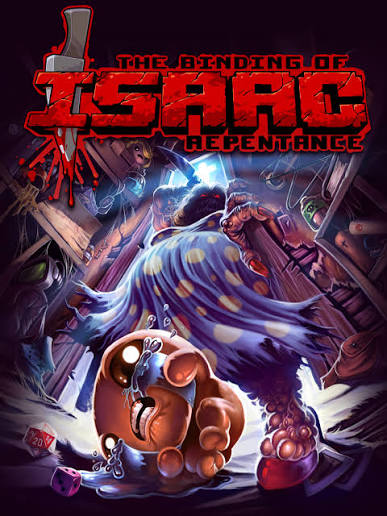
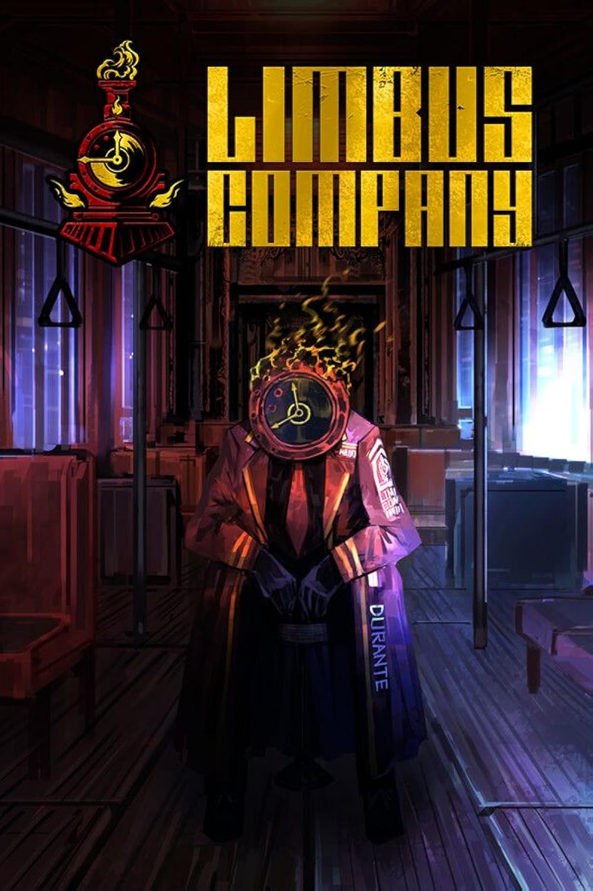
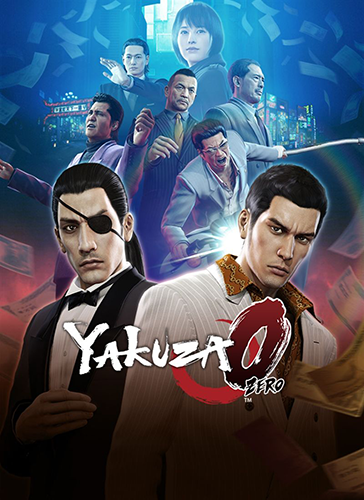
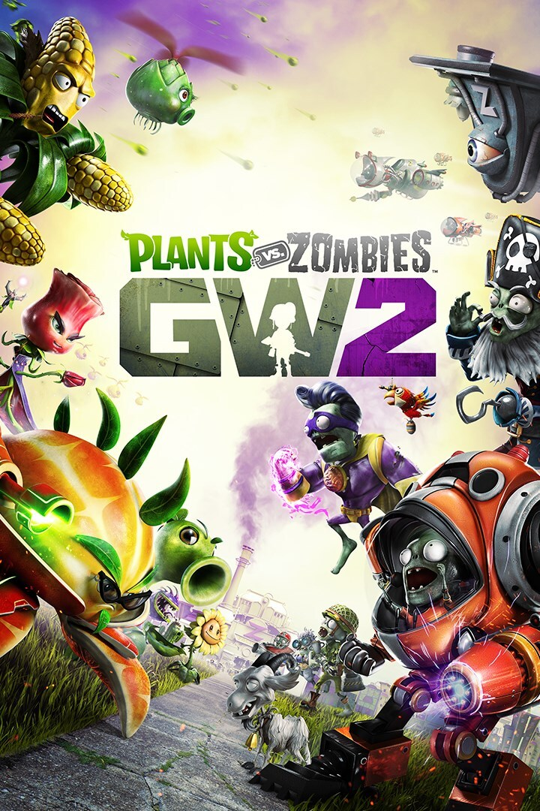
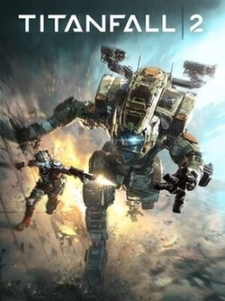
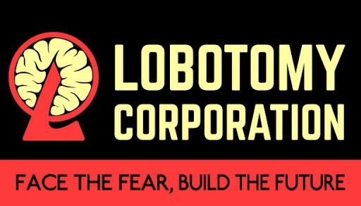

Jogos favoritos
The Binding Of Isaac 🔪
The Binding Of Isaac, ou como conhecido "O avô dos Roguelikes", foi lançado em 2011
por Edmund McMillen e Florian Himsl, o jogo foi inicialmente feito como um jogo
de navegador flash, mas com o sucesso, acabou se tornando um jogo com uma comunidade
gigantesca com mais de milhares de fãs e recebendo diversas atualizações no jogo, com Dlc's
e tendo mais de 600 itens e conhecido por suas conquistas e platinas as quais podem levar
mais de 800 horas de jogo.

Limbus Company
Limbus Company é um jogo gacha, lançado em 2023 pela desenvolvedora de jogos Project Moon,
sendo esse seu primeiro jogo gratuito e se passando no mesmo universo de seus outros 2 jogos
(Lobotomy Corporation e Libray Of Ruina), o jogo se baseia em turnos e seu foco principal é a história
que conta sobre Dante e os 12 pecadores, além da motorista do onibus chamada Charon e o guia
Vergilius. Por enquanto temos 9 capítulos do jogo por agora e futuramente será lançado mais
para a conclusão da história do jogo, o qual o mesmo se passa no inferno.

Yakuza 0
Yakuza 0 é um jogo Rpg de "ação", feito pela SEGA, lançado em 2015, Yakuza
já havia lançado no playstation 2, mas com os novos consoles da época, foi decidido
novos remasters e lançamentos novos da saga para eles. Yakuza 0 conta a história de
Kazuma Kiryu e também Goro Majima, além de outros personagens que vão sendo
introduzidos a história ao decorrer do jogo.
(Curiosidade: Yakuza é bem conhecido pelo meme "Baka Mitai", uma
música a qual tem no próprio jogo no minigame do Karaoke)

Plants Vs Zombies Garden Warfare 2
Plants Vs Zombies Garden Warfare 2 foi mais uma continuação da maior aposta da Pop cap
Pvz foi lançado em 2009 como um tower defense, mas em 2014 foi lançado pvz garden warface, um jogo
que mudou do estilo tower defense para um FPS em primeira terceira pessoa e que foi um sucesso em
vendas, com o jogador podendo escolher em ser do time das plantas ou zombies, tendo classes
de cura, tanque, etc etc, além dos seus outros modos de jogo.
Depois do sucesso do primeiro jogo, após o lançamento do segundo garden warfare, veio novas
classes para as plantas e zombies, novos cosmeticos, mapas e mecanicas as quais foram muito bem recebidas
pelos jogadores e se tornando o jogo mais amado da comunidade quando se trata dos Garden Warface.

Titanfall 2
Titanfall 2, um jogo FPS futurista, tendo seu lançamento em 2016 após o sucesso que Titanfall havia
conseguido após seu primeiro jogo, então eles expandiram com esse novo jogo, trazendo novos titãs, armas, personagens,
modos de jogo e muito mais, junto de um modo história que tinha uma duração de até 4 - 8 horas.

Lobotomy Corporation
Lobotomy Corporation foi o primeiro jogo da Project Moon, tendo seu lançamento em 2018
com a história do jogo voltada em você gerenciar uma corporação voltada a pesquisar e neutralizar anormalidades
que a partir delas, você faz equipamentos e roupas para seus funcionarios.
Você tem que gerenciar a corporação por 50 dias, tendo escolhas em alguns dias que dependendo da
escolha, vai influenciar no final do jogo.
